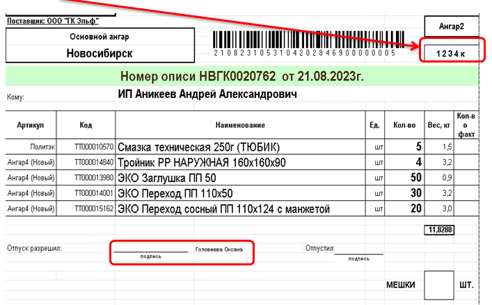
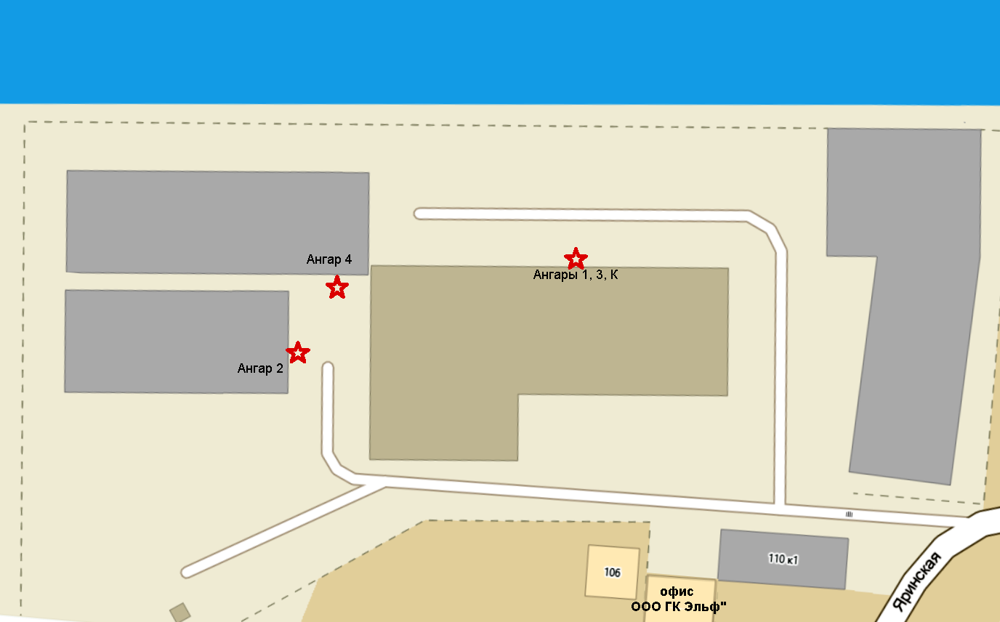

- Алгоритм отбора товара по складскому документу.
- Алгоритм приемки товара (перемещение товара из центр. склада г. Тула).
- Алгоритм для водителей автопогрузчика, при работе с маршрутным листом.
- Приемка ЖД контейнеров
- Выдача "ЖИВЫХ" клиентов
- Плановые пересчеты
- Правила закрытия складов и сдачи под охрану
- Видеоинструкция упаковки ванн и поддонов
Алгоритм отбора товара по складскому документу.
В связи с тем, что у нас отсутствует вторичный контроль собранного товара, возникла необходимость введения четкого регламента по сборке товара для улучшения качества работы.
Порядок работы кладовщика происходит следующим образом:
1. Получить складскую накладную у оператора
2. Оценить объем/вес накладной, определиться с порядком сборки.
3. Обратить внимание на склад с которого реализована продукция.
4. Составить для себя маршрут сборки
5. Приступить к сборке товара.
примечание: При отборе товара необходимо внимательно прочесть наименование позиции которой происходит сборка. Наименование накладной как правило состоит из ряда составляющих: название, тип соединения/размер, торговая марка
(Например: Муфта разъем. PPRC с ВР 25х3/4 MeerPlast,
Кран шаровой 11Б27п1 Ш/Г баб. Ду15
Смотрим торговую марку, идем на место локации данного товара.
• Смотрим название позиции, подходим к месту хранения данного вида товара. Подчеркиваем название в накладной.
примечание: В каждой группе товара имеются позиции схожие по наименованию, но имеющие конструктивные отличия.
(Например: «Муфта разъем. PPRC с ВР 25х3/4 MeerPlast» и «Муфта PPRC с ВР 25х3/4 MeerPlast»)
Найти местоположения где находятся позиции данного вида. (ориентируемся по этикеткам на стеллажах), выделяем данное значение.
• Смотрим на тип соединения, находим место хранения, выделяем данное значение.
(Например: «Муфта разъем. PPRC с ВР 25х3/4 MeerPlast»)
Кран шаровой 11Б27п1 Ш/Г баб. Ду15
• Смотрим на размер соединения, находим место хранения, выделяем данное значение.
(Например: «Муфта разъем. PPRC с ВР 25х3/4 MeerPlast»)
• Убеждаемся, что в месте хранения находится именно та позиция которая необходима.
• Производим отбор необходимого количества товара в соответствии с накладной.
примечание:
* при отборе товара так же необходимо обратить внимание на:
* единицы измерения товара (м., шт., кг.),
* количество в тарной упаковке
* Делимость и неделимость упаковки/товара (метизы отгружаются только тарной упаковкой, труба PPRC –кратно 4м., труба Энергофлекс – кратно 2м. и т.п.)
* Парность (товар отгружается попарно подводка для смесителя отгружается попарно, а подводка для воды поштучно)
* Некоторый товар упакован по несколько штук в одной упаковке, а отгружать нужно поштучно. (хомут трубный упакован по 2шт. в упаковке, кронштейны с креплением PPRC, некоторые виды смесителей торговой марки «Potato»).
• В строчке напротив собираемой позиции в свободном поле необходимо развернуто написать как была собрана данная позиция ( сколько коробок, сколько упаковок по сколько штук, сколько поштучно (например: 3кор. х 200 + 2уп. х 30 + 11шт.))
• Сделать отметку от том что данная позиция отобрана.
Если позиция отобрана без изменений - ставим крыж (V)
Если отобрана с изменениями – ставим прочерк (--), зачеркиваем заданное количество, рядом ставим фактическое.
6. По завершению сборки, необходимо отметить вид и количество мест собранного товара (паллет, мешки, упаковки, коробки и др.) и место их локации.
7. Перед тем как отдать оператору документ по которому производился отбор товара, необходимо проверить еще раз каждую позицию, для того что бы убедиться все отметки сделаны, пропуски отсутствуют, количество мест занесено верно.
8. Ставится отметка ответственного лица (подпись) и документ передается оператору склада.
Правила отбора товара.
1. Товар из разного материала отбирается в отдельные мешки или коробки, например: чёрный метал отдельно от белого, пластик отдельно от метала.
2. Товар, имеющий заводскую упаковку блистер или отдельные коробочки (например: счётчики, манометры, расходные материалы) отбирается только в КОРОБКИ!!!, не в мешки.
3. Если товар выписан кратно заводской упаковке, отбираем соответственно заводскую упаковку (например: коробка кранов), НЕ СКИДЫВАЕМ россыпной товар.
4. Собранный товар в мешки должен быть подъемным (мешок не более 20 кг.)
5. Перед сборкой осматриваем упаковку (радиаторы, водонагреватели, санфаяс и т.п.) на отсутствие внешних повреждений.
Алгоритм приемки товара (перемещение товара из центр. склада г. Тула).
Приемка товара из Тулы осуществляется группой из 4-х человек, в составе группы обязательно должен быть один водитель автопогрузчика.
Подтоварка мест основного хранения осуществляется в течении рабочего дня по необходимости и комплексно в конце недели. Лицо ответственное за участок хранения, оценивает наличие свободного места для размещения товара на своем участке, отсутствии позиций и, формирует в зоне временного хранения необходимый товар. После чего совместно с водителем погрузчика перевозят на основное место хранения.
1. Получить опись у заведующего складом
2. Приемка и размещение товара производится сразу по местам хранения. Если на основных местах хранения свободного места недостаточно, то остаток перевозится в зону временного хранения. Перевозить в зону временного хранения допускается только кратно упаковкам, вскрытые упаковки остаются на основном месте хранения.
3. Места основного хранения должны быть обязательно отмечены этикетками с наименованием размещаемого товара. При отсутствии этикеток необходимо их затребовать у заведующего складом.
4. После окончания приемки товара, необходимо перенести результаты на один экземпляр, если имеются количественное расхождения необходимо поставить фактическое количество, если по факту присутствует товар которого нет в описи, необходимо данную номенклатурную позицию записать на последней странице и отметить фактическое количество пришедшего товара.
5. Завершающим этапом приемки является контроль размещения товара на складе ответственными за свой участок лицами. (В конце рабочего дня, ответственные лица за свой участок хранения проверяют размещение вновь пришедшего товара, делают замечания приемщикам и безотлагательно совместными усилиями их устраняют. В случае необоснованного отказа приемщиком устранить недочеты в своей работе, ответственное за участок хранения лицо сообщает об этом заведующему складом.
В дальнейшем, в случае выявления некорректно размещенного товара на месте основного хранения, повлекшее за собой ошибку при отборе товара, ответственность за допущенную ошибку возлагается на Лицо ответственное за данный участок хранения.
Алгоритм для водителей автопогрузчика, при работе с маршрутным листом.
1. Получить маршрутный лист и складские документы у оператора склада.
2. Отметить время начала погрузки
3. Проверить наличие всех складских документов в соответствии с
перечнем в маршрутном листе. Перенести информацию о количестве мест по
каждому клиенту из складских документов в маршрутный лист.
4. Проверить УПД по предстоящей отгрузке на корректность заполнения
(наличие подписей водителя о принятие товара к перевозке).
5. Произвести погрузку а/м в соответствии с утвержденной очередностью,
отмечая в складских документах факт отгрузки мест - ставим крыж (٧)
6. Взять подписи с водителя о соответствии количества заявленных мест
с фактическим.
7. Отметить время окончания погрузки поставить свою подпись, сдать
документы оператору склада.
Приемка ЖД контейнеров
1. Проверить контейнер внешне на отсутствие повреждений.
При поступлении контейнера выполняют проверку целостности пломб и технического состояния контейнера (отсутствие повреждений и поломок).
• При поступлении груза в неисправном контейнере (повреждения стен, пола, створок) обязательно приглашается водитель контейнеровоза, производится фотофиксация повреждения и уведомляется диспетчер ТК о наличии и характере повреждения. Диспетчером ТК принимается решение о необходимости выезда их представителя для составления технического акта;
• При поступлении грузов в контейнере с нарушенной пломбой, либо повреждениями, допускающими доступ к содержимому контейнера (повреждение или несоответствие пломбы, повреждены крепления ручки, вышедшие кулачки из зацепов на створках), так же приглашается водитель контейнеровоза, производится фотофиксация повреждения и уведомляется диспетчер ТК о наличии и характере повреждения. В таком случае, выгрузка производится только в составе комиссии из представителей ТК и линейной полиции;
• Производится сплошная проверка количества и качества товаров и составляется коммерческий акт, который является основанием для предъявления претензии перевозчику или поставщику. Акт составляется на специальных бланках до принятия груза от перевозчика;
• Уведомление Диспетчера ТК об имеющихся повреждениях ОБЯЗАТЕЛЬНО! В противном случае все затраты на ремонт контейнера адресуют организации получателя, а претензии о повреждении или недостаче товара не принимаются.
2. Фото.
Необходимо сфотографировать:
• Вид контейнера с двух длинных сторон, как для фиксации повреждений, так и для фиксации отсутствия повреждений;
• Общий вид контейнера со стороны ворот, а также детально, если есть повреждения;
• Вблизи весь запорный механизм;
• Вблизи запорный механизм основной воротины;
• Вблизи каждую из пломб, с разных сторон (протереть при необходимости, чтобы читались символы);
• Товар открытого по факту контейнера;
• Обязательно заглянуть внутрь сверху, убедиться, что контейнер полный и без провалов; сфотографировать контейнер внутри.
Фото должны быть качественные, делать 2-3 штуки, задерживая фотоаппарат на одном месте.
Сравниваем фото загрузки, досконально проверяем следующие вещи:
• Пломба имеет соответствующий фото отправителя номер, имеет все те же отличительные особенности (например, отломанные усы, мелкие повреждения и т.д.);
• Если пломба с гранями, и две части не могут взаимно вращаться, то сравнить соосность или не соосность номера на них в соответствии с фото поставщика.
При открытии контейнера необходимо:
• Сравнить фото загрузки с прибытием по факту. Если коробки съехали, необходимо восстановить картину и сфотографировать восстановленную версию;
• Если восстановить не получается, необходимо убедиться, что теоретически все коробки на месте, а также сделать несколько обзорных фото;
• Убедиться, что все крепления, ленты или веревки закреплены так же, как на фото. Фанера, если есть, повернута той же стороной;
• Убедиться, что укладка первого ряда коробок соответствует фотографии отправителя;
• Если поставщик предоставил фото внутренней загрузки, убеждаемся, что они соответствуют с картиной по факту, все коробки лежат в том же порядке;
• Убедиться, что штрих-код на коробках расположен так же, как на фото;
• Убедиться, что наименование продукции указано так же, как на фото.
Все необходимые фотографии приходят в ДО на директора филиала при отгрузке контейнера.
3. В транспортной накладной поставить печать филиала и подпись, а также время прибытия и время убытия контейнера с филиала. Необходимо проверить правильность заполнения.
4. Начать разгрузку и приёмку контейнера. Если в процессе выгрузки товарная группа закончилась, но выявилась большая недостача — сообщить в Отдел ВЭД.
5. После окончания приёмки контейнера на копии «Упаковочного листа» необходимо поставить отметку о приёмке с комментариями:
1) Без изменений и подпись. либо 2) Принято с изменениями и подпись. Зачеркнуть количество товара в листе и расписать, что пришло по факту (например, другое количество, брак, перессорт и т.д.)
6. Далее все документы (Фото, Упаковочный лист, транспортная накладная, Инвойс, ЖД накладная) передать бухгалтеру филиала.
7. Убрать контейнер изнутри (вычистить весь мусор из контейнера).
Выдача "ЖИВЫХ" клиентов
Выдача «живых» клиентов (здесь и сейчас).
(Ограничение по сумме реализации. от 5 000 руб.)
Процесс построен следующим образом:
После создания реализации, менеджер печатает УПД в двух экземплярах (один для нас другой для клиента) и отправляет клиента на оплату. После оплаты, забирает у клиента наш экземпляр УПД с отметкой бухгалтерии (оплачено». Передает клиенту распечатанные расходные ордера созданные автоматически на основании данной реализации, и завизированные своей подписью и печатью.
ВНИМАНИЕ!!!
Если отписанный в реализации товар находится на разных ангарах, то расходных ордеров будет несколько. В данном случае пять ангаров: Ангар 1, Ангар 2, Ангар 3, Ангар 4 и «К» - основной.

Так же клиенту выдается памятка со схемой расположения мест выдачи товара на складском комплексе, куда клиент самостоятельно подходит к соответствующему месту выдачи и вызывает сотрудника, передает ему расходный ордер для сборки и ожидает получения. Необходимо пояснять клиентам, что на каждом ангаре свои сотрудники и ему самому придется обойти все точки выдачи.
«Самовывоз» - получение собранных заранее заказов без изменений

Плановые пересчеты
Плановые пересчеты это важнейшая и неотъемлемая часть работы, позволяющая своевременно выявлять и исправлять ошибки допущенные при приемке товара, размещении его на местах и отборе. Кроме того, от результатов плановых пересчетов зависит наше с вами финансовое благополучие.
Для обеспечения качественного пересчета товарных групп, и исключения халатного отношения к проведению плановых пересчетов, вводится оценка выполнения данного вида работ сотрудником.
1. В случае корректно посчитанного первичного пересчета, если обнаружены расхождения и они подтверждаются повторными проверками, - работа считается выполненной добросовестно.
2. Если сотрудник, проводивший первоначальный пересчет предоставляет некорректные данные о количестве товара, не предприняв достаточно усилий для поиска требуемого товара, а при проведении повторной либо последующей проверки данный товар обнаруживается, это является недобросовестным выполнением задачи. (Причины: товар находится не на месте; товар хранится в нескольких местах хранения; невнимательность; математическая ошибка; заставлены вскрытые коробки – сотрудник не удосужился перепроверить и др.)
3. Если сотрудник, заведомо зная о расхождениях пытается их скрыть предоставляя недостоверную информацию (действия во избежание п.2.), так же является недобросовестным выполнением задачи. По обнаруженным позже расхождениям не трудно понять в какой период они возникли, ответственность понесет сотрудник предоставивший заведомо неверную информацию.
Результаты оценки работы сотрудников учитываются при расчете заработной платы.
Правила закрытия складов и сдачи под охрану
Ответственные лица за сдачу объекта под охрану:
По окончанию работы, сотрудники склада проверяют выключен ли свет и иные электропотребители (обогреватели, иные бытовые электроприборы) а затем закрывают закрепленные за ними склады. Очередность ответственных сотрудников на складах определяется самостоятельно коллективом. После закрытия, ответственные лица пломбируют (если необходимо), делают фотосъемку закрытых ворот/калиток на складах, фото с указанием склада выкладывают в рабочий чат. Ключи от складов сдаются дежурному сотруднику (сотруднику выдачи). Сотрудник выдачи контролирует наличие ключей на своих местах, и в случае отсутствия ключей сигнализирует об этом в рабочий чат.
После закрытия складов, ответственное за сдачу под охрану лицо делает обход складов, и только убедившись, что склады действительно закрыты, сдает объект под охрану.
заведующий складским хозяйством: Белоусов Г.С.
зам. зав. складским хозяйством: Будников Д.А.
специалист по кач-ву: Булгаков В.В.